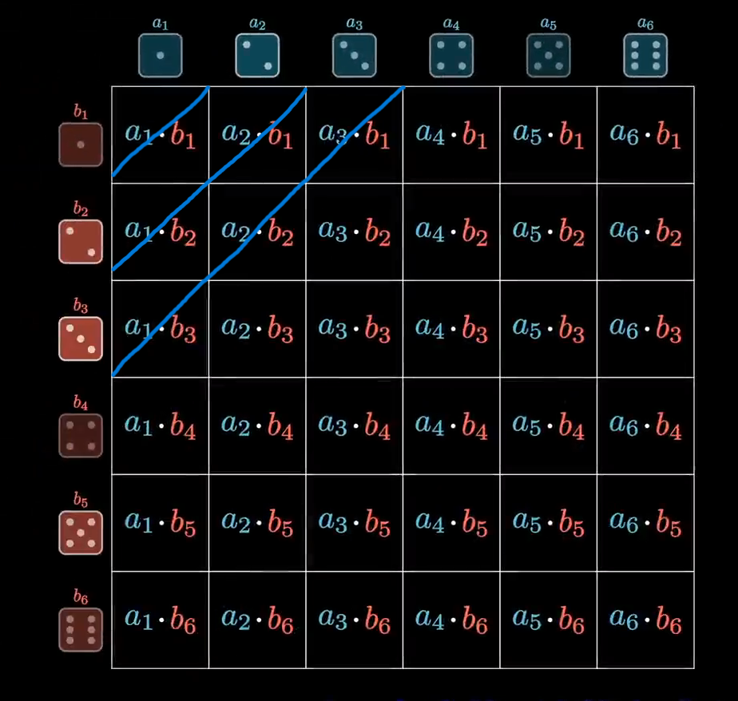
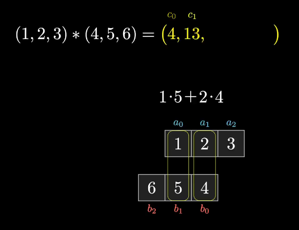
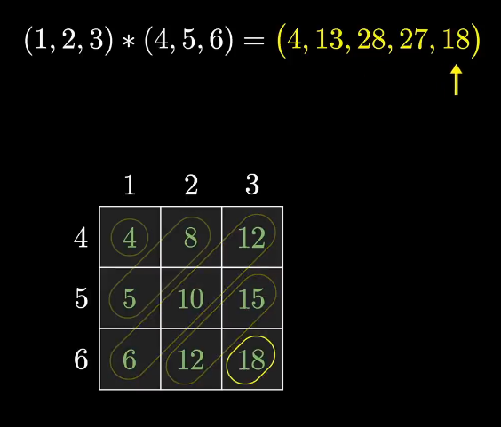
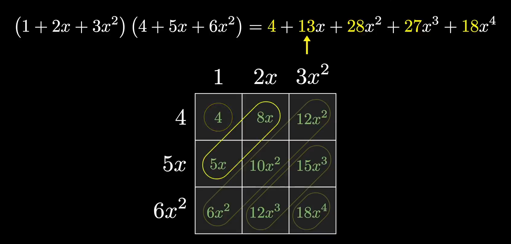
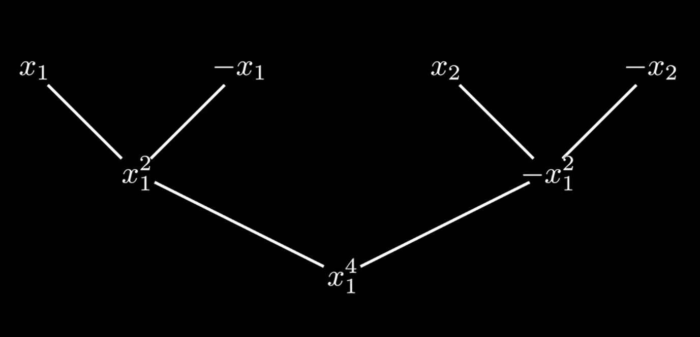
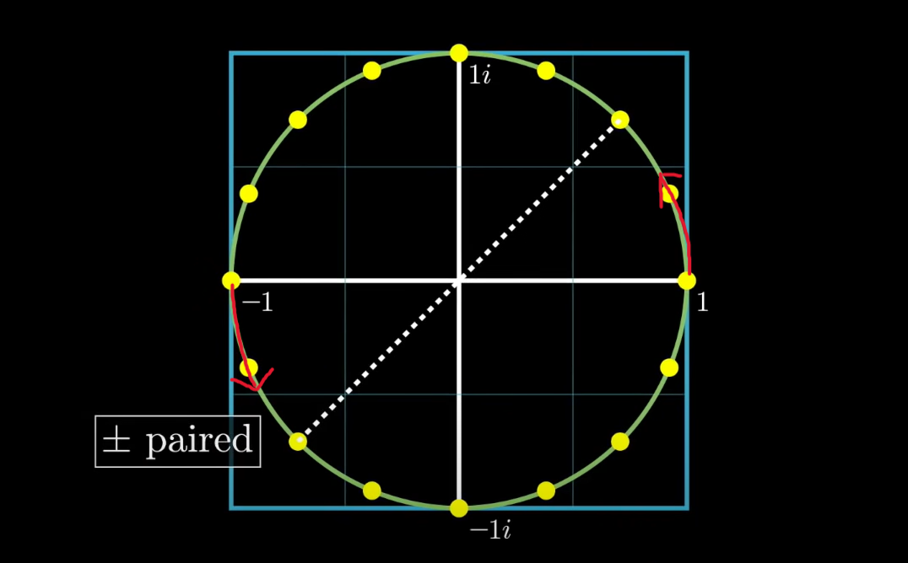

快速卷积算法
离散卷积
概率论中的卷积
假设有两个不均匀的骰子，抛到各面的概率不同。
| 点数 | 1 | 2 | 3 | 4 | 5 | 6 |
|---|---|---|---|---|---|---|
| 概率P | \(a_{1}\) | \(a_{2}\) | \(a_{3}\) | \(a_{4}\) | \(a_{5}\) | \(a_{6}\) |
| 点数 | 1 | 2 | 3 | 4 | 5 | 6 |
|---|---|---|---|---|---|---|
| 概率P | \({b_1}\) | \(b_{2}\) | \(b_{3}\) | \(b_{4}\) | \(b_{5}\) | \(b_{6}\) |
同时抛出两个骰子，现在需要计算得到不同点数和的概率
\(P(sum=2)=a_{1}*b_{1}\)
\(P(sum=3)=a_{1}*b_{2}+a_{2}*b_{1}\)
\(P(sum=4)=a_{1}*b_{3}+a_{2}*b_{2}+a_{3}*b_{1}\)
….
\(P(sum=11)=a_{5}*b_{6}+a_{6}*b_{5}\)
\(P(sum=12)=a_{6}*b_{6}\)
以表格的形式展示的话，可以看出不同项是对角线上的值的和

以此类推。归纳一下的话，我们可以得到以下公式
$$
P(sum=N)=\sum_{i=1}^N (a_{i}\cdot b_{N-i})
$$
如果把n视作一个变量的话，那么我们可以定义这样一种运算:
$$
[a_{n}]*[b_{n}]=\sum_{i=1}^n (a_{i}\cdot b_{n-i})
$$
运算结果是一个列表,总共包含11个项
（如何计算项数？min=1+1=2，max=6+6=12，所以区间为[2,12]，因此是11项）
[\(a_{1}*b_{1}\) , \(a_{1}*b_{2}+a_{2}*b_{1}\) , \(a_{1}*b_{3}+a_{2}*b_{2}+a_{3}*b_{1}\) ,……, \(a_{5}*b_{6}+a_{6}*b_{5}\) , \(a_{6}*b_{6}\)]
举一个简单的计算样例，将[\(b_{n}\)]翻转后，滑动与[\(a_{n}\)]对齐的项对应相乘并相加即可获得列表中的项

$$
(1,2,3)*(4,5,6)=(4,13,28,27,18)
$$
$$
(a_{0}, a_{1},a_{2})*(b_{0},b_{1},b_{2})=(c_{0}, c_{1},c_{2},c_{3},c_{4})
$$
*注意卷积的结果项是比原先的项数多的
以表格形式展示

离散卷积和普通乘积的联系
如果以多项式乘法的角度来观察这个表格,我们可以发现离散卷积算的是两个多项式相乘得到的各项系数

快速卷积算法
\((1,2,3)*(4,5,6)=(4,13,28,27,18)\)
卷积的计算复杂度是\(O(n^{2})\),从之前的表格即可看出该结论。
我们尝试利用之前发现的多项式乘积与卷积的联系,减小卷积的计算复杂度
求\(a_{n}*b_{m}\)：
构造多项式，记：\(f(x)=a_{0}+a_{1}x+a_{2}x^2+a_{3}x^3+….+a_{n-1}x^{n-1}\)，\(g(x)=b_{0}+b_{1}x+b_{2}x^2+b_{3}x^3+….+b_{m-1}x^{m-1}\)。
f(x)和g(x)均为已知的多项式。
记\(f(x) \cdot g(x)=h(x)=c_{0}+c_{1}x+c_{2}x^2+c_{3}x^3+….+c_{m+n-2}x^{m+n-2}\),此处是m+n-1项，记自由度为d=m+n-1
我们只需要将\([c_{d}]\)计算出来即可。h(x)有m+n-1项系数，那就需要建立m+n-1个线性方程。
$$h(0)=f(0)\cdot g(0)=c_{0}+c_{1}\cdot 0+c_{2}\cdot 0^{2}+…c_{m+n-2}\cdot 0^{m+n-2}$$
$$h(1)=f(1)\cdot g(1)=c_{01}+c_{1}\cdot 1+c_{2}\cdot 1^{2}+…c_{m+n-2}\cdot 1^{m+n-2}$$
$$…$$
$$h(m+n-2)=f(m+n-2)\cdot g(m+n-2)$$
$$=c_{0}+c_{1}\cdot (m+n-2)+c_{2}\cdot (m+n-2)^{2}+…c_{m+n-2}\cdot (m+n-2)^{m+n-2}$$
此处选取了x=0,1,2,…m+n-2的点，当然可以选取别的点。
计算一个f(0)的计算量是n，g(0)的计算量是m，f(0)和g(0）相乘的计算量是1，因此获得一个h(0)的计算量是m+n-1，那么h(0),h(1),…h(m+n-2)的计算量总共是\((m+n-1)^{2}\)，而且还有解方程的额外开销。这么一看，利用多项式乘积获取卷积似乎并不是一个明智的做法，计算开销反而更大了。
但是，如果我们能在h(x)的取值上花些心思来节约计算量…
如果熟悉傅里叶矩阵的话，那么可以想到利用傅里叶矩阵的性质来极大地减小f(x)和g(x)对应取值的计算量。
h(x)包含m+n-1项，如果需要借助傅里叶矩阵的话，考虑到傅里叶矩阵的阶数是\(2^{d}\),d为整数，所以我们需要获取一个d，满足\(2^{d-1}\leq m+n-1\leq 2^{d}\)。缺失的项可以用包含0的项填充。对于f(x)，我们首先将其填充为d项，取\(x={e^{ \frac{2\pi i}{d}\cdot n} },n=0,1,2,…d\),然后可以获得
$$
\left[
\begin{matrix}
f(w_{0}) \\f(w_{1}) \\f(w_{2}) \\ … \\ f(w_{d-1})\end{matrix}
\right] =
\left[
\begin{matrix}
1 & 1 & 1 &…1 \\ 1 & w^{1} & w^{2}… & w^{d-1} \\ 1 & w^{2} & w^{4}… & w^{2d-2} \\ .&.&.&.\\ .&.&.&. \\ .&.&.&.\\ 1 & w^{2d-2} & w^{3d-3}… & w^{(d-1)^{2}} \end{matrix}
\right]
\left[
\begin{matrix}
a_{0} \\ a_{1} \\ a_{2} \\ … \\ a_{d-1} \end{matrix}
\right]
$$
对于g(x)同理可以计算得到\([g(w_{i})],i=0,1,2,..,d-1\)。
然后获取\([h(w_{i})],i=0,1,2,..,d-1\)。最后只要对该数组，或者说向量，进行矩阵逆运算即可。
傅里叶逆矩阵的形式与原矩阵非常相似
$$
\frac{1}{d}\left[
\begin{matrix}
1 & 1 & 1 &…1\\ 1 & w^{-1} & w^{-2}… & w^{-(d-1)}\\ 1 & w^{-2} & w^{-4}… & w^{-(2d-2)} \\ .&.&.&.\\ .&.&.&. \\ .&.&.&.\\ 1 & w^{-(2d-2)} & w^{-(3d-3)}… & w^{-(d-1)^{2}} \end{matrix}
\right]
$$
傅里叶逆变换计算如下：
$$
\left[
\begin{matrix}
c_{0} \\ c_{1} \\ c_{2} \\ … \\ c_{d-1} \end{matrix}
\right]=
\frac{1}{d}\left[
\begin{matrix}
1 & 1 & 1 &…1\\ 1 & w^{-1} & w^{-2}… & w^{-(d-1)}\\ 1 & w^{-2} & w^{-4}… & w^{-(2d-2)} \\ .&.&.&.\\ .&.&.&. \\ .&.&.&.\\ 1 & w^{-(2d-2)} & w^{-(3d-3)}… & w^{-(d-1)^{2}} \end{matrix}
\right]
\left[
\begin{matrix}
h(w_{0}) \\ h(w_{1}) \\ h(w_{2}) \\ … \\ h(w_{d-1}) \end{matrix}
\right]
$$
借助FFT，我们可以很快的计算出\([f(w_{i})]\)和\([g(w_{i})]\),继而获得\([h(w_{i})]\)。最后再利用逆变换便可以获得需要的离散卷积值。
两种方式来理解FFT
First: 代数的角度
这种方式利用了递归，并且借助奇偶多项式的性质来实现计算量的减少。下面以一个具体例子来解释这种方法。
Example:
\(P(x)=x^{3}+2x^{2}+3x+5,d=4\)
如果我们需要计算未知的\(P(x)\)的各项系数,我们需要获得d个P(x)的取值。如果P(x)是偶函数的话，那么P(x)=P(-x),我们只需要计算\(\frac{d}{2}\)个P(x)的点，便可以获得d个方程，从而获得P(x)的各项系数。（虽然我们早就知道偶函数的奇数项系数为0）；如果是奇函数的话那么P(x)=-P(-x)，我们同样可以减少计算量。
现在回归到一般的情况，P(x)是普通多项式，我们该如何减小计算量？
\(P(x)=P_{even}+xP_{odd}\),对P(x)进行这样的分解！
我们对上面的例子进行分解：\(P(x)=(2x^{2}+5)+x(x^{2}+3)\)
\(P(x)=P_{e}(x^{2})+xP_{o}(x^{2})\)
\(P(x_{i})=P_{e}(x_{i}^{2})+x_{i}P_{o}(x_{i}^{2}),P(-x_{i})=P_{e}(x_{i}^{2})-x_{i}P_{o}(x_{i}^{2}),i=1,2,3,…\frac{d}{2}\)
这么一来，只要代入合适的数据，便可以实现计算量的减半。但是什么样的数能够满足
对于\(P(x)=2x^{2}+5+x(x^{2}+3)\)，计算\(x=[\pm x_{1},\pm x_{2}]\)即可。为了进一步减小计算量，用同样的方法对 \(P_{e}\)和\(P_{o}\)进行分解。
\(P_{e}=2x^{2}+5=2x^{2}+5+x\cdot 0\), 计算\(x=[{x_{1}^{2}},x_{2}^{2}]\)即可
\(P_{o}=x^{2}+5=x^{2}+5+x\cdot 0\)，则是计算\(x=[{x_{1}^{2}},x_{2}^{2}]\)
但是，\(x=[{x_{1}^{2}},x_{2}^{2}]\)并不是\(x=[\pm x_{1},\pm x_{2}]\)这样正负对称的，因此无法使用奇偶性来简化计算。
如何能使得\(x_{2}^{2}=-x_{1}^{2}\)呢？

这需要借助复数\(e^{\frac{2\pi i}{4}\cdot x }\)。
\([\pm x_{1},\pm x_{2}]=[\pm 1,\pm i]\)，然后是\([{x_{1}^{2}},x_{2}^{2}]\)，即\([{x_{1}^{2}},-x_{1}^{2}]=[\pm x_{1}^{2}]=[\pm 1]\)

正负是从箭头处开始区分,即实数轴上方为正，下方为负。但是为什么？
对于\([e^{\frac{2\pi i}{n}\cdot w}],w=[0，1，2，3,…,n-1]\)
取一个位于正区域的复数\(e^{\frac{2\pi i}{n}\cdot m}\),\(0\leq m\leq \frac{n}{2}-1\),那么对应的负区域的复数就是\(e^{\frac{2\pi i}{n}\cdot (m+\frac{n}{2})}=e^{\frac{2\pi i}{n}\cdot m}\cdot e^{\frac{2\pi i}{n}\cdot \frac{n}{2})}=e^{\frac{2\pi i}{n}\cdot m}\cdot e^{\pi i}=-e^{\frac{2\pi i}{n}\cdot m}\)
\([\pm x_{1},\pm x_{2}]\)是需要取（1，0），（0，i）的两个复数进行运算。然后（-1，0）和（0，-i）是借助奇偶性减少了计算量。
在进一步的分解中\([{x_{1}^{2}},-x_{1}^{2}]\),是加倍了步长，仅需要选取（1，0）的这一个复数进行运算，然后（-1，0）借助奇偶性即可。
举一个更长的例子,\([\pm x_{1},\pm x_{2},\pm x_{3},\pm x_{4},\pm x_{5},\pm x_{6},\pm x_{7},\pm x_{8}]\)。
那么需要选取\([e^{\frac{2\pi i}{16}\cdot w}],w=[0，1，2,…，7]\)位置的复数。即图中实数轴上半部分的黄色点，包括（1，0），但是不包括（-1，0）。至于\([e^{\frac{2\pi i}{16}\cdot w}],w=[8，9，2,…，15]\)这几个复数是利用奇偶性。
对于进一步的分解\([{x_{1}^{2}},x_{2}^{2},…x_{8}^{2}]\),为了使其呈正负对称，我们需要其满足:\(x_{5}^{2}=-x_{1}^{2}，x_{6}^{2}=-x_{2}^{2}，x_{7}^{2}=-x_{3}^{2}，x_{8}^{2}=-x_{4}^{2}\)，从而获得\([\pm x_{1}^{2}，\pm x_{2}^{2}，\pm x_{3}^{2}，\pm x_{4}^{2}]\).
那么在这张图上，我们需要取\([e^{\frac{2\pi i}{8}\cdot w}],w=[0，1，2，3]\)位置的复数进行计算。相当于在原先取的黄点集合上，每两个黄点取一个（当然包含第一个）。至于\([e^{\frac{2\pi i}{8}\cdot w}],w=[4，5，6，7]\),同上，借助奇偶性来计算。
然后可以继续进行分解为\([\pm 1,\pm i]\)，分解和我们原本的example的分解相同……
下面我们利用所得到的结论，来将总结为一个公式：
\(P(x)=P_{e}(x^{2})+xP_{o}{x^{2}},x=[\pm x_{1},\pm x_{2},…,\pm x_\frac{n}{2}]\)
一般会将\([e^{\frac{2\pi i}{n}\cdot w }],w=[0,1,…,n-1]\)写作\([w^{j}],j=[0,1,…,n-1]\)
\(P(w^{j})=P_{e}(w^{2j})+w^{j}P_{o}(w^{2j}),x=[\pm w^{0},\pm w^{1},…,\pm w^{\frac{n}{2}-1}]=[w^{0},w^{1},…w^{\frac{n}{2}-1},w^{\frac{n}{2}},…,w^{n-1}]\)
下面总结一下利用奇偶性进行计算的公式，首先将取值按正负分开：
\(P(x_{i})=P_{e}(x_{i}^{2})+x_{i}P_{o}(x_{i}^{2}),x=[x_{1},x_{2},…,x_{\frac{n}{2}}]\)
\(P(-x_{i})=P_{e}(x_{i}^{2})-x_{i}P_{o}(x_{i}^{2}),x=[-x_{1},-x_{2},…,-x_{\frac{n}{2}}]\)
将我们精心选取的复数代入公式：
\(P(w^{j})=P_{e}(w^{2j})+w_{j}P_{o}(w^{2j}),x=[w^{0},w^{1},…,w^{\frac{n}{2}-1}]\)
\(P(w^{j+\frac{n}{2}})=P(-w^{j})=P_{e}(w^{2j})-w_{j}P_{o}(w^{2j}),x=[w^{0+\frac{n}{2},w^{1+\frac{n}{2}}},…,w^{n-1}]=[-w^{0},-w^{1},…,-w^{\frac{n}{2}-1}]\)
然后是递归地使用该公式对多项式进行分解和计算。分解到只剩一项常数项时，则返回该常数
FFT的描述实际上已经到此为止了，接下来的描述式则是有助于写代码的
记\([y]=[P(w^{0}),P(w^{1}),P(w^{2}),…,P(w^{n-1})]\)
\([y_{e}]=[P_{e}(w^{0}),P_{e}(w^{2}),P_{e}(w^{4}),P_{e}(w^{6})，…,P_{e}(w^{n-2})]\)
\([y_{o}]=[P_{o}(w^{0}),P_{o}(w^{2}),P_{o}(w^{4}),P_{o}(w^{6})，…,P_{o}(w^{n-2})]\)
\(P(w_{j})=y_{e}[j]+w^{j}y_o[j],j=[0,1,…,\frac{n}{2}-1]\)
\(P(w_{j+\frac{n}{2}})=y_{e}[j]-w^{j}y_o[j],j=[0,1,…,\frac{n}{2}-1]\)
*** 代码部分 ***
def FFT(P):
# P:[p0,p1,p2...],记录了多项式P的各项系数
n=len(P)#n is a power of 2
if n==1:
return P
#w=e^(2*pi*i/n)
w=complex(math.cos(2*math.pi/n),math.sin(2*math.pi/n))
#Pe=[p0,p2,p4,p6...]
#Po=[p1,p3,p5...]
Pe=[::2]
Po=[1::2]
Ye=FFT(Pe)
Yo=FFT(Po)
Y=[0]*n
#w^(j)=e^(2j*pi*i/n)
for j in range(n/2):
Y[j]=Ye[j]+complex(math.cos(2*j*math.pi/n),math.sin(2*math.pi/n))*Yo[j]
Y[j+n/2]=Ye[j]-complex(math.cos(2*j*math.pi/n),math.sin(2*math.pi/n))Yo[j]
return y
# 至于傅里叶逆变换，观察傅里叶逆矩阵即可看出与原矩阵的区别在于，每个元素都取共轭，然后乘以1/n，然后代码里也仅需对一行进行修改。
def IFFT(P):
# P:[p0,p1,p2...],记录了多项式P的各项系数
n=len(P)#n is a power of 2
if n==1:
return P
#w=e^(2*pi*i/n)
w=complex(math.cos(2*math.pi/n),math.sin(2*math.pi/n))
#Pe=[p0,p2,p4,p6...]
#Po=[p1,p3,p5...]
Pe=[::2]
Po=[1::2]
Ye=FFT(Pe)
Yo=FFT(Po)
Y=[0]*n
#w^(j)=1/n*e^(-2j*pi*i/n)
for j in range(n/2):
Y[j]=Ye[j]+complex(math.cos(2*j*math.pi/n),math.sin(2*math.pi/n))*Yo[j]
Y[j+n/2]=Ye[j]-complex(math.cos(2*j*math.pi/n),math.sin(2*math.pi/n))Yo[j]
return y
Second: 矩阵的角度
$$F_{n}=\left[
\begin{matrix}
1 & 1 & 1 &…1\\ 1 & w^{1} & w^{2}… & w^{d-1}\\ 1 & w^{2} & w^{4}… & w^{2d-2} \\ .&.&.&.\
.&.&.&. \\ .&.&.&.\\ 1 & w^{2d-2} & w^{3d-3}… & w^{(d-1)^{2}} \end{matrix}
\right]$$
其中\(F_{n(x,y)}=w_{n}^{x\cdot y}\)
对于\(w_{n}^{j}=e^{\frac{j\cdot 2\pi i}{n}}\)，可以有以下推论：\((w_{n}^{j})^{2}=(e^{\frac{j\cdot 2\pi i}{n}})^{2}=e^{\frac{j\cdot 2\pi i}{\frac{n}{2}}}=w_{\frac{n}{2}}^{j}\)。例如：\((w_{64}^{j})^{2}=w_{32}^{j}\)
下面展示对64阶傅里叶矩阵的分解：
$$[F_{64}]=\left[
\begin{matrix}
1 & 1 & 1 &…& 1\\ 1 & w_{64}^{1} & w_{64}^{2}&… & w_{64}^{63}\\ 1 & w_{64}^{2} & w_{64}^{4}&… & w_{64}^{126} \\ .&.&.&.&.\\ .&.&.&.&. \\ .&.&.&.&.\\ 1 & w_{64}^{126} & w_{64}^{189}&… & w_{64}^{(63)^{2}} \end{matrix}
\right]
$$
$$[F_{64}] =\left[
\begin{matrix}
I & D\\ I & -D\\ \end{matrix}
\right]\left[
\begin{matrix}
F_{32} & O\\ O & F_{32}\\ \end{matrix}
\right]P
$$
其中I是32*32的单位矩阵；矩阵D后面会重点解释；矩阵P是个置换矩阵，在解释完D后很好理解
$$D=\left[
\begin{matrix}
1 & 0 & 0 &…& 0\\ 0 & w_{64}^{1} & 0 &… & 0\\ 0 & 0 & w_{64}^{2} &… & 0\\ .&.&.&.&.\\ .&.&.&.&. \\ .&.&.&.&.\\ 0 & 0 & 0&… & w_{64}^{31} \end{matrix}
\right]
$$
P是一种置换矩阵，将一矩阵的第一列向量放在第一列，\(\frac{n}{2}+1\)列向量放在第二列，以此类推
$$P=\left[
\begin{matrix}
1 & 0 & 0 & 0 &… & 0\\ 0 & 0 & 0 & 0 &… & 0\\ 0 & 0 & 1 & 0 &… & 0\\ .&.&.&.&.\\ .&.&.&.&.\\ 0 & 1 & 0 & 0 &…& 0\\ 0 & 0 & 0 & 0
&…& 0\\ 0 & 0 & 0 & 1 &…& 0\\ .&.&.&.&…&.\\ .&.&.&.&…&.\\ \end{matrix}
\right]$$
举一个具体的，阶数更小的P可能看起来更好理解,例如4阶P矩阵：
$$P_{4}=\left[
\begin{matrix}
1 & 0 & 0 & 0\\ 0 & 0 & 1 & 0\\ 0 & 1 & 0 & 0\\ 0 & 0 & 0 & 1\\ \end{matrix}
\right]
$$
我们来分析一下这个矩阵分解
$$\left[
\begin{matrix}
I & D\\ I & -D\\ \end{matrix}
\right]\left[
\begin{matrix}
F_{32} & O\\ O & F_{32}\\ \end{matrix}
\right]=\left[
\begin{matrix}
IF_{32} & DF_{32}\\ IF_{32} & -DF_{32}\\
\end{matrix}
\right]
$$
我们将分解后的矩阵相乘，反推这个矩阵分解是如何构造的。我们可以发现这个矩阵分解的方式与之前做的多项式分解有异曲同工之妙。
首先看第一行\([IF_{32},DF_{32}]\)，我们可以将其与这个分解对比
\(P(w^{j})=P_{e}(w^{2j})+w_{j}P_{o}(w^{2j}),x=[w^{0},w^{1},…,w^{31}]\)
矩阵的第二行\([IF_{32},-DF_{32}]\)可以与这个分解对比
\(P(w^{j+\frac{n}{2}})=P(-w^{j})=P_{e}(w^{2j})-w_{j}P_{o}(w^{2j}),x=[w^{0+\frac{n}{2},w^{1+\frac{n}{2}}},…,w^{n-1}]=[-w^{0},-w^{1},…,-w^{31}]\)
所以说矩阵第一行计算的是图中实数轴上半部分对应的复数，第二行计算的是实数轴下半部分的复数。
接着将目光放在矩阵的第一列和第二列。\(IF_{32}\) 和 \(DF_{32}\) ，其实在先前的与多项式分解的对比中，可以注意到他们之间的联系是even和odd，但是怎么在矩阵中体现是？我们可以看到,
我们试图将分解为\(F_{32}\)的矩阵还原为\(F_{64}\)矩阵。但是显然\(F_{32}\)中的各项元素\(w_{32}^{i}\)与\(F_{64}\)中所需的\(w_{64}^{i}\)是不同的。为了直观地理解
\(IF_{32}\) 和 \(DF_{32}\)和P究竟做了什么，我们不妨用具体的例子看看这一过程。
利用\((w_{64}^{j})^{2}=w_{32}^{j}\),即\(w_{64}^{2j}=w_{32}^{j}\)，我们可以得到
$$F_{32}=\left[
\begin{matrix}
1 & 1 & 1 &…&1\\ 1 & w_{32}^{1} & w_{32}^{2}&… & w_{32}^{31}\\ 1 & w_{32}^{2} & w_{32}^{4}&… & w_{32}^{62} \\ .&.&.&.&.\\ .&.&.&.&. \\ .&.&.&.&.\\ 1 & w_{32}^{31} & w_{32}^{2*31}&… & w_{32}^{31^{2}} \end{matrix}
\right]=\left[
\begin{matrix}
1 & 1 & 1 &…&1\\ 1 & w_{64}^{2} & w_{64}^{4}&… & w_{64}^{62}\\ 1 & w_{64}^{4} & w_{64}^{8}&… & w_{64}^{62\cdot 2} \\ .&.&.&.&.\\ .&.&.&.&.\\ .&.&.&.&.\\ 1 & w_{64}^{2\cdot 31} & w_{64}^{4\cdot 31}&… & w_{64}^{62\cdot 31} \end{matrix}
\right]$$
$$=\left[
\begin{matrix}
1 & 1 & 1 &…&1\\ 1 & w_{64}^{1\cdot 2} & w_{64}^{1\cdot 4}&… & w_{64}^{1\cdot 62}\\ 1 & w_{64}^{2\cdot 2} & w_{64}^{2\cdot 4}&… & w_{64}^{2\cdot 62} \\ .&.&.&.&.\\ .&.&.&.&. \\ .&.&.&.&.\\ 1 & w_{64}^{31\cdot 2} & w_{64}^{31\cdot4}&… & w_{64}^{31\cdot 62} \end{matrix}
\right]
$$
可以看出这是\(F_{64}\)里的前32行里的偶数列。
对偶数列稍作处理即可获得奇数列，按行分别乘以\([w_{64}^{0},w_{64}^{1},…,w_{64}^{31}]\)，即\(D\)矩阵。
$$DF_{32}=\left[
\begin{matrix}
1 & 1 & 1 &…&1 \\ w_{64}^{1} & w_{64}^{3} & w_{64}^{5}&… & w_{64}^{63} \\ w_{64}^{2} & w_{64}^{4} & w_{64}^{6}& … & w_{64}^{126} \\ .&.&.&.&
\\ .&.&.&.&. \\ .&.&.&.&.\\ w_{64}^{31} & w_{64}^{3\cdot 31} & w_{64}^{5\cdot 31}&… & w_{64}^{63\cdot 31} \end{matrix}
\right]
$$
至于\(F_{64}\)的后32行，第j+32 (j>32)行偶数列中的第一列的元素是1(第j行偶数列的第一列的元素是1)，偶数列中的第二列的元素是\(w_{64}^{(j+32)\cdot 2}=w_{64}^{2j+64}=w_{64}^{2j}\)(对应第j行偶数列的第二列元素也是\(w_{64}^{2j}\)),第三列元素是\(w_{64}^{(j+32)\cdot 4}=w_{64}^{4j+128}=w_{64}^{4j}\),和前面32行的偶数列的元素是完全一样的,因此后32行的偶数列也是\(IF\)。
至于奇数列则是按行分别乘以\([w_{64}^{32+0},w_{64}^{32+1},…,w_{64}^{32+31}]\)
注意，\(w_{64}^{32+j}=w_{64}^{32}\cdot w_{64}^{j}=-w_{64}^{j}\)。即\(-D\)矩阵。
这下子我们已经得到了\(F_{64}\)的所有项，剩下的就是用个矩阵把奇数项和偶数项放在正确的位置，这就是最后需要矩阵P来完成的工作了。我们用反推的方式了解了FFT矩阵分解的原理，不得不惊叹这里的每一个步骤是多么的巧妙！
至于傅里叶矩阵的逆矩阵，涉及到很多线性代数知识，我也并没有完全理解。简单地来说就是利用傅里叶矩阵是个正交矩阵的特性，能够很容易的获得其逆矩阵。
完结撒花！
也可以在这里查看动画教学https://www.youtube.com/watch?v=h7apO7q16V0&ab_channel=Reducible。本文就是抄的这个。